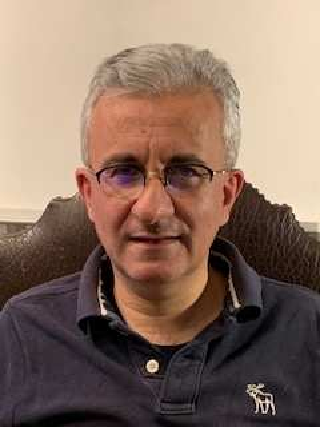
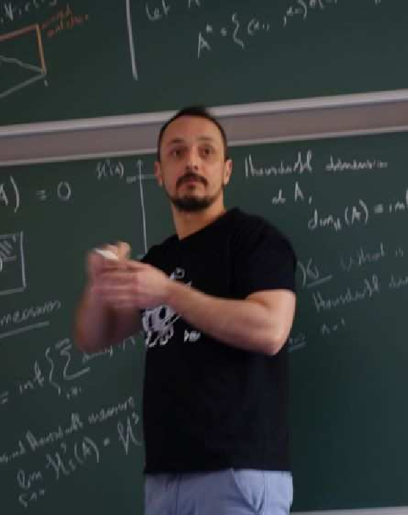

6G research has just started around the globe and it becomes obvious, that 6G is supposed to become an agile and organic network environment able to adapt dynamically to dedicated needs, KPIs and changing situations. Thus management aspects have to be considered already in the early phases of architectural design of 6G. This tutorial is structured into four parts.
First the tutorial provides a motivation for 6G and and a short overview of global 6G initiatives. Subsequently the tutorial will provide an overview on the technological and operational trends, which is believed to affect the upcoming 6G infrastructure. This includes higher frequencies communications (sub-THz, THz and optic) enabling enhanced communications, positioning, and sensing as well as satellite and Non-Terrestrial Networks (NTNs) integration with 5G and 6G for coverage extensions, extra capacity and global, cross-country coverage. Also we address the evolution of network softwarization towards cloud-native network architectures pushing enabling DevOps and CD/CI mentalities for agile network provisioning as well as RAN function virtualization, disaggregation driven by Open RAN stimulating the RAN-Core convergence. All this will lead to a core network evolution towards an organic end-to-end 6G data driven architecture, dynamically adapting to the momentary service requirements and infrastructure resources available based on AI/ML. We will compare these trends with the current 5G campus networks evolution, as we assume that this will be the nucleus for a successful 6G adoption.
In part three will outline a potential end-to-end 6G architecture and emerging management aspects we will outline a first high level organic 6G architecture and the related management issues to be addressed. Based on the previous review of the state of the art in research and evolution trends the tutorial will concentrate in this part on the 5G core network evolution towards 6G and its integration with different fronthaul and backhaul networks. This is done by adopting newer software development paradigms, such as web services, micro-services, distributed data bases and shared memory systems, but also perform a re-consideration of mobility, QoS, authentication, authorization and access control functionality in the new 6G context underlining the progress which has to be achieved until 6G. On the management side the importance of properly granular system monitoring, data acquisition, data curation and data exchanges as fundamental technologies for extensive system automation is considered key enabling a redefinition of the network management paradigm to consider the advancements on complex system theory, intent based systems, and the potential support of machine learning for defining subscription profiles and ultra-customized networks.
Finally, we provide examples, how researchers could setup their own 6G research infrastructure based on current open 5G testbed infrastructures. The globally recognized Open5GCore toolkit (www.open5GCore.org) will be used as an example on how 6G research could be enabled by existing open networking toolkits and how hands-on practical implementations enable to pin-point potential developments, underline potential technologies (see also www.6g-ready.org). An outline of the German BMBF Open 6G Hub (www.open6ghub.de) will be given at the end of the tutorial.
Thomas Magedanz (PhD) has been professor at the Technische Universität Berlin, Germany, leading the chair for next generation networks (www.av.tu-berlin.de) since 2004. In addition, since 2003 he has been Director of the Business Unit Software-based Networks (NGNI) at the Fraunhofer Institute for Open Communication Systems FOKUS (www.fokus.fraunhofer.de/go/ngni) in Berlin. For 33 years Prof. Magedanz has been a globally recognized ICT expert, working in the convergence field of telecommunications, Internet and information technologies understanding both the technology domains and the international market demands. His interest is in software-based networks for different verticals, with a strong focus on public and non-public campus networks. His current interest is in the evolution from 5G to 6G. For more details look here: http://www.av.tu-berlin.de/menue/team/prof_dr_thomas_magedanz/
Marius Corici (Dr. Eng.) is a senior researcher at the Fraunhofer FOKUS Institute. He has received his Diploma-Engineer degree at the ― Polithenica University of Bucharest on Nomadic Satellite-Based VoIP Infrastructure. He joined the Next Generation Network Infrastructures (NGNI) competence center of Fraunhofer FOKUS Institute, later renamed as Software-based Networks Division. He has received his Doctoral Degree in 2013 on Self-Adaptable IP Control in Carrier Grade Mobile Operator Networks. Currently, he is the deputy head of the Software-based Networks business direction of Fraunhofer, leading the research and development teams for the Open5GCore (www.open5gcore.org) and NEMI (www.nemi-project.org) toolkits and acting as a research pathfinder for the evolution towards vertical sectors and customization of massive core networks as well as the design and specification of novel beyond-5G features and 6G architectures. Furthermore, Marius Corici is acting as researcher at the Technische Universität Berlin and preparing the lectures on 5G as part of the department next generation networks (Architekturen der Vermittlungsknoten – AV) (www.av.tu-berlin.de).
Varum Gowtham (M.Sc.) is a senior scientist at the Fraunhofer FOKUS Institute and researcher at Technische Universität Berlin, Germany. He received his M.Sc degree in 2016, in ICT Innovation from EIT (European Institute of Innovation and Technology) Digital Master School, a dual degree program between Technische Universitaet (TU) Berlin and University of Trento, Italy with Embedded Systems as major field of study. Previously he worked as a project assistant at Department of Electronic Systems Engineering (DESE), Indian Institute of Science, Bengaluru. His current research focus is on autonomous and organic networks.
Next Generation (NextG) communications and computing systems present competitive environments, where the users evolve in a physical, digital, or virtual space with others, sharing the same resources. These systems are characterized by partial system information availability, uncertainty of system available resources, and risks in the decisions/actions taken by the users. In such emerging distributed and competitive networking environments, it is imperative to design resource management processes, that reconcile the user and system goals, and conclude to mutually beneficial points. In this tutorial, we aim to introduce the audience to resource management paradigms, that address and treat these challenges. Towards this direction three main distinct models are reviewed and presented to treat the problems of information incompleteness (Contract Theory), risk-aware resource management with uncertainties (Prospect Theory and Tragedy of the Commons), and distributed resource management design (non-cooperative Game Theory). The scope of this tutorial is, first, to provide an introduction to the basic principles and models of each theory independently, and then, emphasize on how these theories can work complementary to address the resource allocation problem in NextG wireless communications and computing systems that implement several disruptive network technologies and services, such as Unmanned Aerial Vehicle (UAV)-assisted communications, Integrated Access and Backhaul (IAB), and multi-layer delay-tolerant computing. The application of the aforementioned theories in the common real-life problems of bandwidth sharing in wireless networks and computing resource sharing in Edge Computing systems, concludes the tutorial.
The tutorial specializes in the management of future wireless networks and edge/cloud computing deployments and services with respect to the radio and computing resources that are utilized and shared among the end-users. The specific challenges introduced by the adoption of disruptive technologies (e.g., Unmanned Aerial Vehicle (UAV)-assisted communications, Integrated Access and Backhaul (IAB), multi-layer delay-tolerant computing) are analyzed, and the application of economic models and solutions is presented, towards dealing with the general problems of bandwidth and computing resource sharing.
 Symeon Papavassiliou is currently a Professor in the School of ECE at National Technical University of Athens. From 1995 to 1999, he was a senior technical staff member at AT&T Laboratories, New Jersey. In August 1999 he joined the ECE Department at the New Jersey Institute of Technology, USA, where he was an Associate Professor until 2004. He has an established record of publications in his field of expertise, with more than 350 technical journal and conference published papers. His main research interests lie in the area of computer communication networks, with emphasis on the analysis, optimization, and performance evaluation of mobile and distributed systems, wireless networks, and complex systems. He received the Best Paper Award in IEEE INFOCOM 94, the AT&T Division Recognition and Achievement Award in 1997, the US National Science Foundation Career Award in 2003, the Best Paper Award in IEEE WCNC 2012, the Excellence in Research Grant in Greece in 2012, the Best Paper Awards in ADHOCNETS 2015, ICT 2016 and IEEE/IFIP WMNC 2019, as well as the 2019 IEEE ComSoc Technical Committee on Communications Systems Integration and Modeling best paper award (for his INFOCOM 2019 paper). He also served on the board of the Greek National Regulatory Authority on Telecommunications and Posts from 2006 to 2009.
 Christos Pelekis received the B.Sc. degree in mathematics from the University of Crete (2005), the M.Sc. degree in applied mathematics from NTUA (2008), and the Ph.D. degree in mathematics from the Delft University of Technology (2014). He is currently a Post-Doctoral Fellow with the Network Management and Optimal Design Laboratory, School of Electrical and Computer Engineering, National Technical University of Athens (NTUA). Before joining NTUA he was a Postdoctoral fellow in the Computer Science Department at KU Leuven, Belgium (2014-2016), and a Postdoctoral Researcher at the Institutes of Computer Science and Mathematics, Czech Academy of Sciences (2017-2018). His research interests include game theory, combinatorics, resource sharing, discrete probability, and measure theory.
Maria Diamanti is a research associate in the Network Management and Optimal Design Laboratory, in the School of Electrical and Computer Engineering at the National Technical University of Athens. She received her Diploma in Electrical and Computer Engineering from the Aristotle University of Thessaloniki in 2018. She is currently involved as a researcher in several National and European R&D projects in the era of Future Internet. Her research interests lie in the areas of 5G/6G wireless networks, resource management and optimization, game theory, contract theory, and reinforcement learning.
To address the complex issues that larger and highly integrated networks face in the design, analysis, deployment and management phases, recent advances in data science and engineering technologies in both academia and industry have spurred the adoption of various Artificial Intelligence (AI)/Machine Learning (ML) platforms and frameworks in telecommunication network infrastructures. In this tutorial, we aim to provide a comprehensive and thorough overview of the recent advances in data engineering frameworks and link the capabilities of the data engineering ecosystem with a possible connection to future telecommunication systems in the context of network management and orchestration. Some special features of this tutorial are: a clear link between the data engineering ecosystem (including data connection, data ingestion, data processing & analysis, data storage, data monitoring & visualization and data management & orchestration frameworks) and recent developments in networking, an overview of standardization efforts in network management and orchestration and how these can be related to data engineering frameworks, the relationship to data science frameworks, ML platforms used in the industry, and related data engineering use cases for telecommunications networks will be discussed. Two examples on log management in NFV service orchestration and AI/ML-driven scaling of digital service will also be demonstrated. Finally, gap analysis, challenges, and future directions will be discussed.
Engin Zeydan received the PhD degree in February 2011 from the Department of Electrical and Computer Engineering at Stevens Institute of Technology, Hoboken, NJ, USA. Since November 2018, he has been with the Communication Networks Division of the CTTC working as a Senior Researcher. He was a part-time instructor at Electrical and Electronics Engineering department of Ozyegin University Istanbul, Turkey between January 2015 and June 2018. His research areas include data engineering/science for telecommunication networks.
Josep Mangues-Bafalluy received the PhD degree in Telecommunications in 2003 from the Technical University of Catalonia (UPC). He is Senior Researcher and Head of the Services as Networks (SAS) Research Unit of the CTTC. He has given keynotes in conferences/workshops (MONAMI 2015, Mobislice 2020). His research interests include SDN and NFV applied to next generation mobile networks and data science/engineering- and AIML-based network automation.
As per the trend, 5G and beyond 5G networks are going to be increasingly softwarized, virtualized, cloudified and edgified. The reason being such networks allow efficient monitoring and management, provide resiliency and self-configurability, facilitate agile creation of vertical services, and offer flexible level of services and many more advantages. Nevertheless, softwarization of future wireless networks will also increase the potential for security breaches, date privacy vulnerabilities, malicious access control, illicit utilization of resources, installation of unauthentic virtual network functions. We posit the potential of distributed ledger technology (DLT) technologies, including Blockchain, in addressing some of these challenges, partly due to the underpinning decentralized and consensus-driven DLT technologies and the combination of cryptographic processes. Despite recent advances in DLT/blockchain, there remain many challenges when we attempt to integrate the use of DLT/blockchain in 5G and beyond 5G supported systems, for example in terms of scalability, privacy issues, and performance. Therefore, this tutorial will focus on key aspects of blockchain/DLT technologies in 5G and beyond 5G applications, and in particular, solicit and present state-of-the-art advances and use cases in various aspects relating to the design and implementation of blockchain/DLT technologies in 5G and beyond 5G applications. Moreover, it will provide a demonstration of how to deploy Blockchain in B5G use cases.
For a long-time blockchain, the most famous DLT has been looked at as an isolated technology. However, blockchain and other DLTs are being integrated with other technologies such as IoT, Big Data, and Artificial Intelligence. This trend fuel the adaptation of DLTs for the Realization of Beyond 5G Networks and its services. Blockchain and other DLTs are identified as a technology that could solve a number of technical challenges beyond 5G Networks. So, Let’s have a look at the role of Blockchain and other DLTs in beyond 5G Networks!
Madhusanka Liyanage (Senior Member, IEEE) received his B.Sc. degree (First Class Honours) in electronics and telecommunication engineering from the University of Moratuwa, Moratuwa, Sri Lanka, in 2009, the M.Eng. degree from the Asian Institute of Technology, Bangkok, Thailand, in 2011, the M.Sc. degree from the University of Nice Sophia Antipolis, Nice, France, in 2011, and the Doctor of Technology degree in communication engineering from the University of Oulu, Oulu, Finland, in 2016. From 2011 to 2012, he worked as a Research Scientist at the I3S Laboratory and Inria, Shopia Antipolis, France. He is currently an assistant professor/Ad Astra Fellow at School of Computer Science, University College Dublin, Ireland. He is also acting as an adjunct Processor at the Center for Wireless Communications, University of Oulu, Finland. He was also a recipient of the Marie Skłodowska-Curie Actions Individual Fellowship during 2018-2020. During 2015-2018, he has been a Visiting Research Fellow at the CSIRO, Australia, the Infolabs21, Lancaster University, U.K., Computer Science and Engineering, The University of New South Wales, Australia, School of IT, University of Sydney, Australia, LIP6, Sorbonne University, France and Computer Science and Engineering, The University of Oxford, U.K. He is also a senior member of IEEE. In 2020, he received "2020 IEEE ComSoc Outstanding Young Researcher" award by IEEE ComSoc EMEA. Dr. Liyanage's research interests are 5G/6G, SDN, IoT, Blockchain, MEC, mobile, and virtual network security. More info: www.madhusanka.com